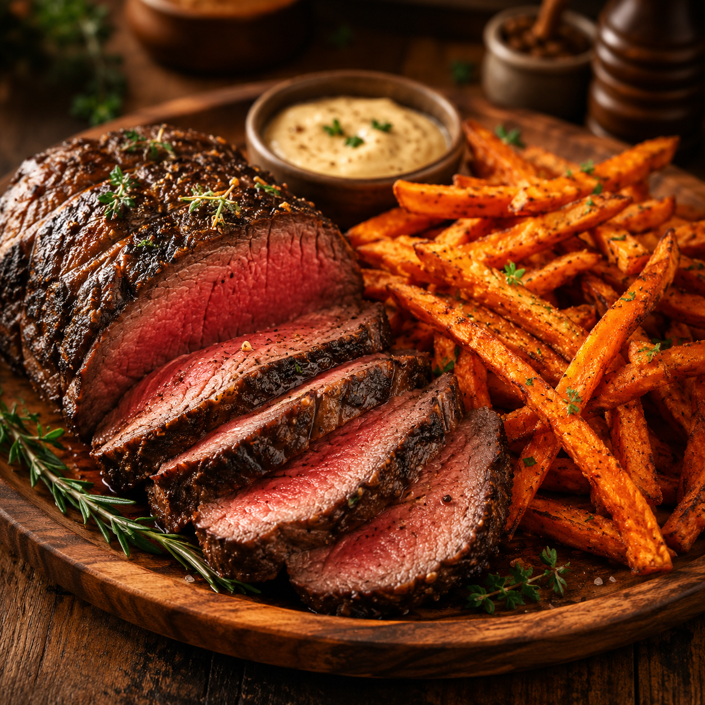

Roast Beef with Sweet Potato Fries
Home

Description
A simple roast dinner: tender beef with a browned, buttery crust, paired with oven-baked sweet potato fries. The roast is seared in butter, then finished in the oven until cooked to your liking.
Ingredients
Main Ingredients
- Beef roast (sirloin tip, eye of round, or a small rump roast)
- Butter (for searing and roasting the beef; also for tossing the fries)
- Salt and black pepper
- Sweet potatoes
- Cornstarch (optional, helps the fries crisp)
Butter gives the beef a rich crust when you sear it in a hot pan. For the fries, melted butter works well; if your oven runs very hot, a small splash of neutral oil mixed into the butter reduces the risk of the butter scorching before the fries are tender inside.
Optional Ingredients
- Neutral oil (a little, optional, mixed with butter for the fries at high heat)
- Garlic powder, smoked paprika, or rosemary for the beef
- Onion powder or cayenne for the fries
- Horseradish sauce, mustard, or a quick pan jus for serving
Optional aromatics add character without complicating the recipe. Save pan drippings from the beef if you want a simple sauce on the side.
Steps
- Preheat the oven. Sweet potato fries usually take longer than the beef, so start them first.
- Peel the sweet potatoes and cut them into even sticks or wedges.
- Toss with melted butter, salt, and optional spices; add a light dusting of cornstarch if you want extra crunch.
- Spread the fries in a single layer on a parchment-lined sheet pan and put them in the oven, flipping once partway through.
- While the fries bake, pat the roast dry and season generously with salt and pepper (and any dry spices you like).
- In a hot oven-safe skillet, melt a generous knob of butter and sear the roast on all sides until deeply browned.
- Transfer the skillet to the oven (or move the beef to a roasting pan) and roast, spooning pan butter over the meat when you check it, until the center reaches your target temperature; use a thermometer for accuracy.
- Transfer the beef to a board, tent loosely with foil, and let it rest. If the fries need more color, give them a few extra minutes in the oven until they are crisp outside and tender inside.
- Slice the beef thinly against the grain and serve with the hot fries and your chosen sauce.
Enjoy your roast beef and sweet potato fries!